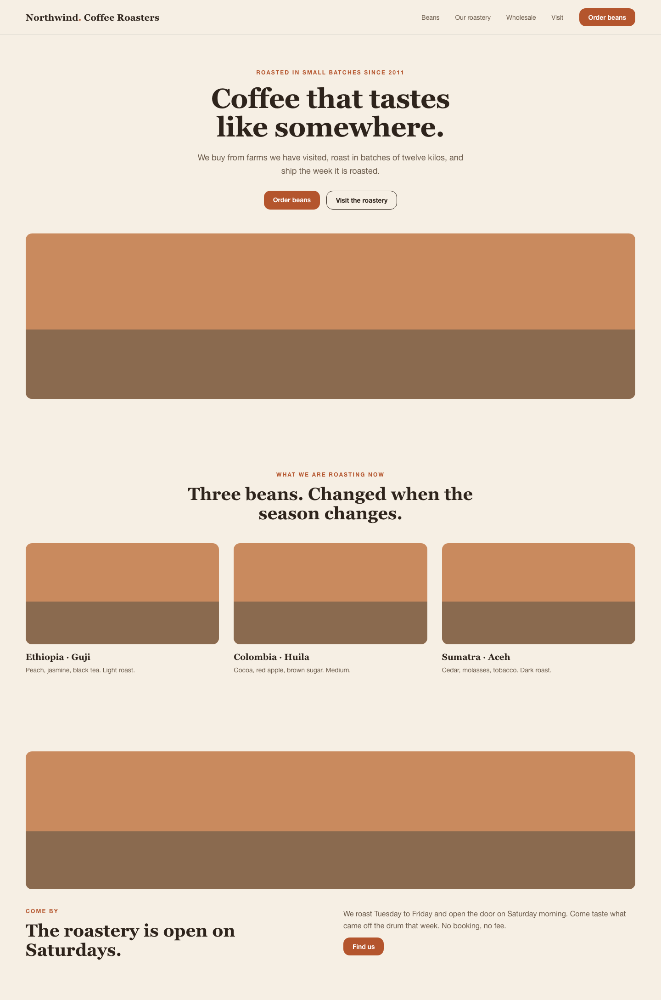
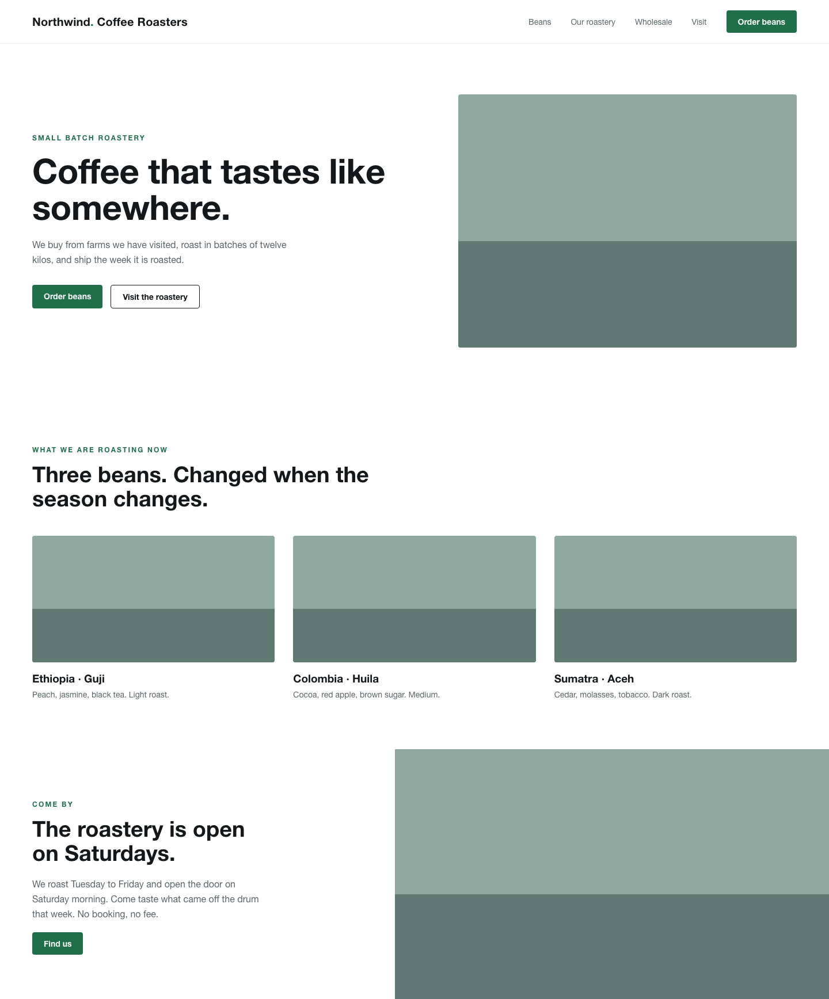
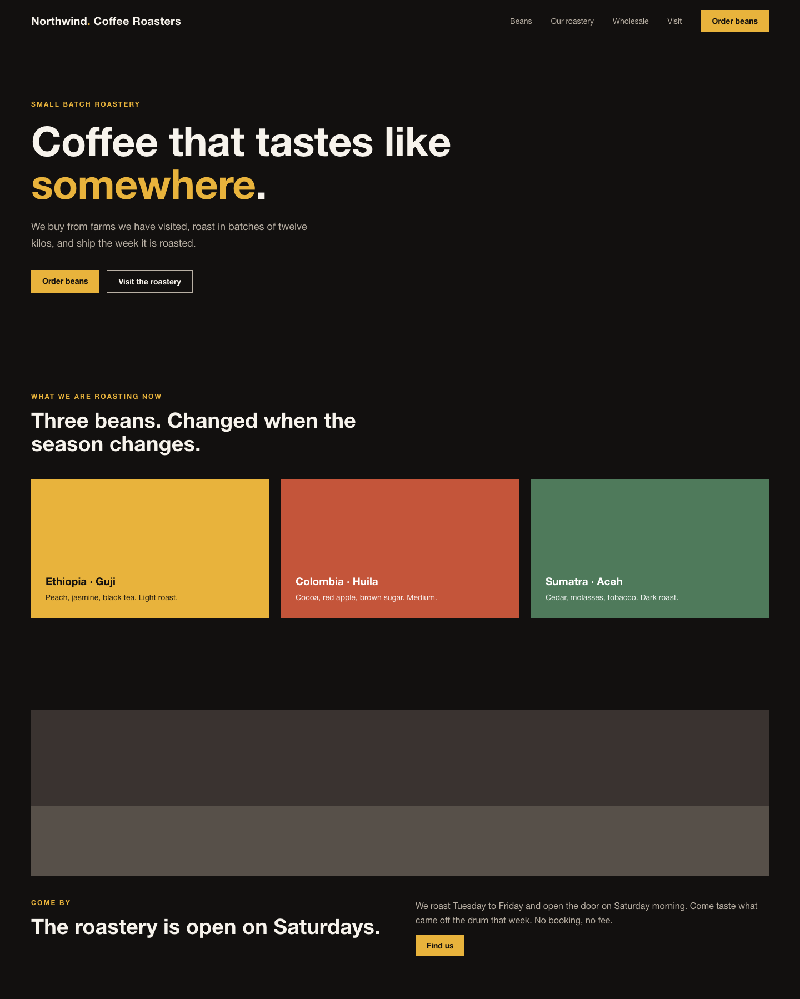

Prepared for Northwind Coffee Roasters · Small batch roastery
Before you start
Here is what your new website could look like: the structure, and three design directions for the homepage. This is about layout, look and feel, not the final copy and not your real photos. Have a look and tell us which direction feels most like you.
Three steps. Nothing to prepare. Read it in your own time and tell us afterwards what you like.
First we show which sections your homepage has and what goes in each one.
Then three design worlds for the same page. Notice which one feels most like you.
You tell us which direction fits. A mix is fine too. We build the rest.
Three sections, in the order someone scrolls them. The first screen decides whether they stay.
The bean list changes with the season, so that section is built to be edited by you without touching the layout.
Same structure, same words, three different worlds. Look at which one you would want to walk into.



Most of it is already in your brief. These are the few things we could not answer from it, and they are the reason some text above is a placeholder.
Tell us which of the three fits best. A mix is allowed.
We tune type, colour and imagery to you and your real photos.
We build the finished site, mobile first, with a simple way to order.
Look at the three directions in your own time and just tell us what you like and what you do not. Both are useful.